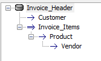

Optimized Active-Link Sets
In Sets that are based on active-link tables, there are now dramatic performance improvements under certain conditions. The conditions under which you will see performance improvements are in Sets with one-to-one links, were the one-to-one links at a given level in the Set are based on the same SQL backend database. For example, the Invoice Set in Alphasports has this structure:
If the Invoice_header and Customer active-link tables both come from (say) the same SQL Server Database and the Invoice_Items, Product and Vendor tables all come from (say) the same Oracle Database, then the Set is optimizable because the one-to-one links at each level both come from the same SQL database. In this example, the one-to-one links at the top level (Invoice_Header and Customer) come from a SQL Server database and the one-to-one links at the second level (Invoice_Items, Product and Vendor) all come from an Oracle database.
Optimized Active-Link Sets work by converting all of the one-to-one links at a given level into a single SQL query that joins the tables on the database server.
Turning On Active-Link Set Optimization - To turn on active-link Set optimization, you will need to edit and then resave any Sets that you have previously created.
Active-Link Set Optimization can be turned off by editing the Set and then clicking the new Optimize... button in the Set Editor.
The following Interactive Window session shows timing differences between an optimized and non-optimized version of the Alphasports Invoice set running against an Access MDB file.
Non-Optimized Set Timings:
'Open the set
t1 = now(); s = set.open_session("al_setold.set"); t2 = now(); ?(t2-t1)
1.561000
'Loop through the first 20 records in the set
t1 = now(); for i = 1 to 20; s.fetch_next(); next i; t2 = now(); ?(t2-t1)
8.035000
s.close()
Optimized Set Timings:
'Open the set
t1 = now(); s = set.open_session("al_set.set"); t2 = now(); ?(t2-t1)
0.768000
'Loop through the first 20 records in the set
t1 = now(); for i = 1 to 20; s.fetch_next(); next i; t2 = now(); ?(t2-t1)
1.686000
s.close()
Watch Video Demonstration of Speed Improvement